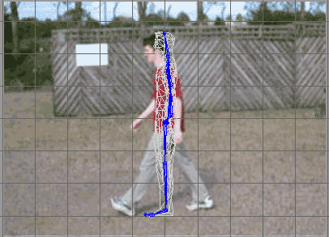
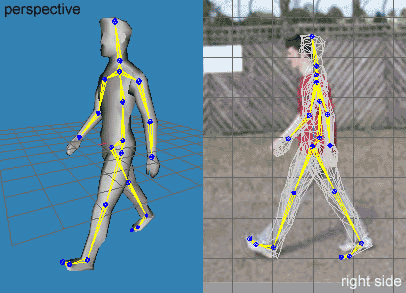
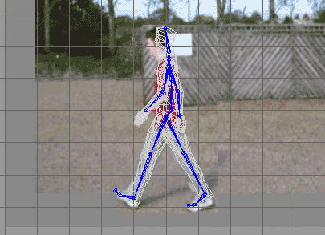
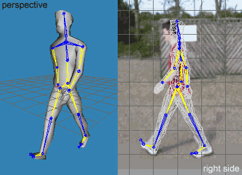
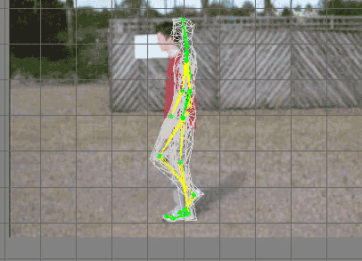
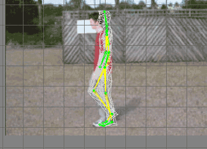

Part 3: Creating a Walk Animation
Animating is easy, however, creating a good, realistic animation
isn't. I wanted this to be as realistic an animation as possible,
so to aid me I temporarily robbed my brother of his natty new digital
camera with video capabilities and created some short reference movies,
of me walking, running and dashing. We will only use the walking reference.
There are different working styles to creating animations, but I personally
prefer to start with a small number of key frames at the extremes
of the animation and build up from there, tuning it as I go.
If you have set up your vertices and bones correctly it should be very
easy to move the different parts of the model around by manipulating the
joints. Enable animation mode by clicking 'Anim' on the Keyframer in the bottom right corner of the
screen. Now select some of your joints (try the hips, knees, shoulders and
elbows) and select the rotate tool (F3) then rotate the joints in the three 2D orthographic
views, do you see the ways in which they rotate differently depending on
which viewport you rotate within?
Right now you have a feel for rotating the joints we can load in the
references and start animating. I have taken stills from the AVI file of me
walking and saved them as JPEGs so I can load them into the background of
MilkShape 3D and use them as references for positioning the joints. As we are
creating a walk animation its best to work in the side view as this is the
view in which most change takes place throughout the animation, therefore it
is easier to see.
When creating the reference images I tried to get the image to the correct
size for the size of the model that was created this was completely
trial and error.
- Here is the Right side view
of the viewport with the background image set and ready for animating.

- So to start off make sure you are in animation
mode (the 'Anim' button is pressed) and the keyframe slider is on frame
one, select the left_hip joint from the Joints tab of the Toolbox
and rotate the left leg into place. As you can see from the image the
left leg is straight so we'll just leave it at that.
- Do the same with the right leg... select the right_hip
joint from the Joints tab of the Toolbox and rotate the right leg so it
is at the same position as the right leg in the image.
- At this stage its best to do some tweaking
before we position the arms. The problem with
modelling with
this method is that the image is a perspective view whereas the model is
an orthographic view, this provides some measurement problems; we have
no choice but to try to work around this. The key is to keep thinking
how it would be... don't be afraid to get up and start walking around to
test your theories. Rotate the ankle and foot_ball joints
into position, remembering that the key is to have the heel of the left
foot on a horizontal line to the toe of the right foot, i.e. so both
feet are touching the ground.
- Now we can proceed with the arms. Position the
left and right arms by selecting the shoulder joints and rotating them
into position. As you can see there is a slight bend in the right arm
(the arm furthest from the camera) so once you have rotated the right_shoulder
joint select the right_elbow joint and rotate that to match up
with the right forearm in the image.
- Now the frame is almost ready
to store but before that we must move the whole skeleton down to be
sitting on the nearest line (which will be the grid line that the sole
of the model's feet were resting on before we started rotating joints)
we will call this line the 'base line' from now on. This, as you will
notice, is because when we walk we don't remain at the same height all
the time, because our legs are at diagonals; in the stride of our step
we drop down a bit. Select the root pelvis joint and move (F2) it down so the bottom of the model (toe
of right foot and heel of left) are touching the nearest grid line. The
frame is complete (double check the keyframe slider is on frame one)
click menu item Animate->Set Keyframe or press Ctrl+K to store the skeleton position to
the keyframe. Our final frame looks like this.

As you can see the process is quite lengthy...
You have to do this for several frames of the walk cycle, but even all this
work does not guarantee you a realistic walk cycle. For just now we will take
each frame as it comes, if the animation requires tuning later on then we
will do so.
When you
pressed the button to store the keyframe the position of the skeleton was
saved in the keyframe that the keyframe slider was on. If you change the
keyframe while you have your model posed and it is not saved then the model
will be reset, this can be very irritating if you forget to pick the keyframe
first. So if you do this you can save the skeleton to the keyframe the slider
is currently on then copy that keyframe and paste it where you intended it to
be (remember that after pasting you have to set the keyframe as well). You
can delete the keyframe from the unwanted position by selecting the keyframe
by using the keyframe slider then clicking Animate->Delete Keyframe (Shift+Ctrl+K); just remember to do so before you
set any more keyframes.
You can see in the image above that the bones (the parts between the joints)
are highlighted yellow. This indicates that the positions of the yellow bones
are keyed at the keyframe the keyframe slider is currently on. If you move
the keyframe slider to the right you will see that the bones turn blue again
(the default colour), this indicates that there are no set positions for the
bones at that keyframe.
- Now we can get on with the
right foot forward frame. I have changed the reference picture to the
right foot forward extreme of the walk cycle. I want the walk cycle to
take up 30 frame all together so the keyframe at which the opposite
(right foot forward) extreme will occur is 15 because we are assuming it
takes the same amount of time to walk from the left foot onto the right
as it does from the right foot onto the left, therefore splitting the
animation length in half which means 30/2 = 15... If you catch my drift.
I had to fiddle a little more with the second image to obtain a decent reference;
this was due to my distance from the camera and perspective angles
etc... Anyway here is the image with the pre-keyed bone positions from
the last keyframe we set (remember that blue bones indicate an unset
keyframe).

- Once again we follow the same process we used
to set up the skeleton for the first keyframe. Start with the hip joints
rotating them into position (remember that the leg positions have to be
swapped because the right foot is forward in this image). So rotate the
right leg to be in the same position as that of the image, then the left
leg, after this tweak the ankle and foot_ball joints. The
key here similar to step four is to have the toe of the left foot and
heel of the right foot on the ground.
- Once again move the arms into position. In the
reference image you can't see the right arm because it is behind my
torso, so move the right arm first to where the model's left arm is then
move the model's left arm to where the left arm is in the image.
- The model is already resting
on the base line because we did not change the location of the model
from the last frame. So now we can set the frame; Animate->Set
Keyframe or Ctrl+K. You will now have
something that looks like this:

You can see that in this image only some of the
bones are highlighted yellow; this indicates the changes we have made since
the last keyframe. The rest of the joints keep the same rotation values as
those of the frame before it.
- Now if you move the keyframe slider back and
forth you will see the animation take place. As you can see it is very
unrealistic, he looks as if he is sliding on ice or doing the moonwalk
or something. The intermittent frames are the ones we will be changing
after the next step.
- The last frame must be the same as the first
so that there is continuity in the animation, if not then the animation
will jump from the last frame to the first and you will see an obvious,
un-natural error in the cycle. To do this we copy and paste the
keyframes. Move the slider to the first keyframe position. Select all
the joints in the model using the Select tool with the joints modifier
so that every joint position is selected for copying. Then click
Animate->Copy Keyframe. Move the slider to the last keyframe of the
animation (keyframe 30) then click Animate->Paste Keyframe. Now click
Animate->Set Keyframe to store it. Move the slider back and forth to
confirm the operation worked correctly. You now have a complete cycle
all that is left to do is tweak it.
- I captured two extra frames
from the mid strides of the walk cycle; this is the point at which the
two legs are the closest together. This allows us to set up the points
in time that both legs are brought off the ground just after the
pinnacle of the stride. For example if your left foot is into the stride
i.e. it is forward then the right leg (behind you) will be bought off
the ground to be bought forward i.e. into the stride. At this point the
left leg bends slightly and the right bends even more as to avoid
contact with the ground as it is being brought forward. The mid stride
where the right foot is going forward is the first keyframe to set up. I
placed this at frame eight.

I have actually exaggerated the bend in the
knee as I wasn't satisfied with the animation it was producing. Sometimes it
is necessary to pronounce certain frames to get the animation looking more
realistic, even though there may be a clear difference between the frame and
the reference image. The trick is to know when it is necessary; with
experience you will learn this skill.
- At keyframe twenty three,
half way between the middle and last frame I added the mid stride for
the left foot coming forward. This too, is exaggerated.

Once I had both the mid strides in place I
played the animation for a bit to see if everything was ok, apart from adding
the exaggerations as I mentioned earlier everything was fine.
- The last part to add is the dip in the walk.
In frames 1, 15 and 30 we moved the pelvis (the root joint) down
a fraction because the animation was in the full stride at these points.
Keyframes 8 and 23 where I added the mid stride frames, are the frames
at which the two legs are the closest together, therefore there is a
rise in the height of the model at these points. At frames 8 and 23 I moved
the pelvis joint up by a fraction then set the keyframes immediately
after so as not to loose the changes.
- At this point the fundamental
animation is complete. You can add modifications to get it looking better;
just don't forget to set the keyframes (Animate->Set Keyframe) after
you make changes to keyframes. It is also a good idea to keep backups of
the fundamental animation so that if you mess something up latter on you
can just reload the basic animation.
Summary
Throughout this animation I showed you the steps to making a walk animation.
Although the context is biased towards a walk animation, the same principles
can be easily applied to any animation you may wish to create. The process
and application commands remain the same.
Good luck in your adventures into animation!
|